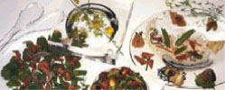
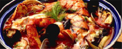
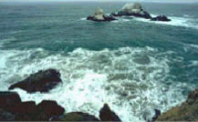

| Gastronomía | Restaurantes |  |
|---|---|---|
| Sidrerías y asadores | ||
| Bodegas de vino y Txacoli | ||
| Productos típicos |  | |
| Escuela de hostelería | ||
| Cultura | archivos y bibliotecas | |
| museos | ||
| palacios de congresos | ||
| ferias de muestras | ||
| Ocio | Entretenimiento y diversión |  |
| Ocio cultural | ||
| Excursiones y deportes |